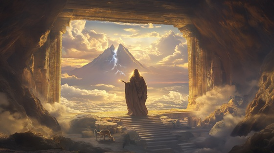

After Cronus devoured his first five children to avoid the prophecy of being overthrown, Rhea secretly gave birth to Zeus in a cave on the island of Crete. There, he was raised in secret by the divine goat Amalthea, guarded by nymphs, and kept hidden from the eyes of the Titan king.
As Zeus grew, so did his destiny. With the help of the Oceanid goddess Metis, he concocted a potion to force Cronus to regurgitate his siblings. This marked the beginning of the great war—the Titanomachy—where the next generation of gods would rise to challenge the old.
Zeus, the hidden child, became the god of storms, thunder, and law. But before he ruled Olympus, he was a spark in hiding, waiting to ignite the sky.
The Hidden Storm
They hid me deep where mountains sleep
The sky above, the roots beneath
Fed by goat and guarded flame
They whispered vengeance with my name
The stars remember what he stole
I feel the storm grow in my soul
The hidden storm, the silent blade
The wrath beneath the vows he made
He swallowed gods, but not the sky—
And I was born to make him die
The world still trembles when he speaks
But fear has cracks, and power leaks
I trained in shadow, struck in stone
And found my voice inside the throne
They chant his rule, they kneel, they pray—
But all empires rot with delay
The hidden storm, the silent blade
The wrath beneath the vows he made
He swallowed gods, but not the sky—
And I was born to make him die
With Metis' brew, the trap is laid
To force the past to be unmade
He’ll spit the sun he tried to snuff—
And find his strength is not enough
GAIA (low, distant): “My child, the wheel has turned again.”
ZEUS: “Then let it break, and not begin.”
The hidden storm, the silent blade
The wrath beneath the vows he made
He swallowed gods, but not the sky—
And I was born to make him die
So rise, O blood, so rise, O kin—
The war begins where I begin